ClinicusMed · Testículo, Epidídimo, Vias Espermáticas, Próstata, Uretra e Pênis · Ficha Padronizada
O Sistema Genital Masculino integra órgãos genitais internos (testículos, epidídimos, vias espermáticas, vesículas seminais, próstata e glândulas bulbouretrais) e um órgão copulador externo (pênis), além do escroto, bolsa que aloja os testículos. Os testículos produzem espermatozoides e hormônios sexuais; o epidídimo armazena e amadurece os espermatozoides; as vias espermáticas (conduto deferente, vesícula seminal, conduto ejaculador) os conduzem até a uretra, que os expulsa ao exterior através do pênis. Essa ficha usa diagramas reais da cátedra com ênfase visual máxima.
Ao final dessa ficha, você será capaz de descrever a constituição anatômica do testículo e do epidídimo; descrever o escroto e seus 5 planos (envolturas); identificar as vias espermáticas (conduto deferente, cordão espermático, vesículas seminais, conductos ejaculadores) e seus trajetos; descrever as 4 porções da uretra masculina; descrever a próstata e as glândulas bulbouretrais; e descrever o pênis — suas 3 porções, o glande, as envolturas e as formações eréteis (corpos cavernosos e corpo esponjoso).
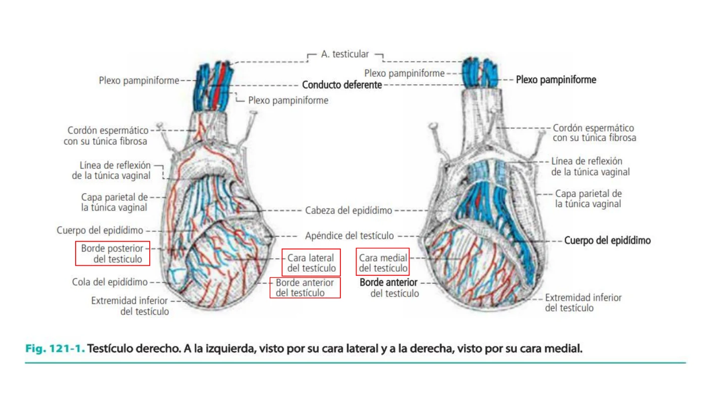
É um órgão ovoide, achatado transversalmente, de cor branco-azulada. Tem alta sensibilidade.
| Característica | Descrição |
|---|---|
| 2 faces | Medial e lateral |
| 2 bordas | Posterior e anterior |
| 2 extremidades (polos) | Superior e inferior |
O testículo e o epidídimo são formados por: uma envoltura fibrosa (túnica albugínea), um tecido próprio e túbulos seminíferos.
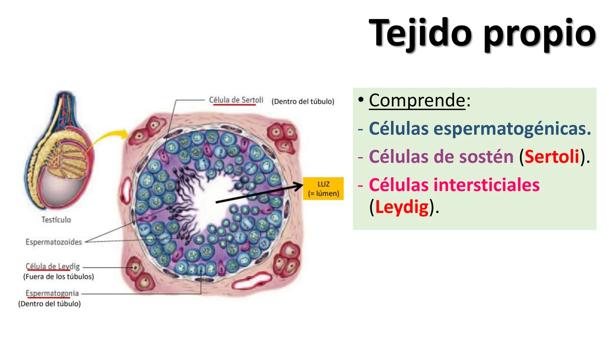
A túnica albugínea é uma membrana fibrosa, espessa, constituída por feixes entrelaçados de fibras de colágeno. Na parte posterossuperior do testículo é mais densa e forma a rede testicular (de Haller). Ela envolve o testículo e forma septos testiculares desde o mediastino até a superfície, delimitando os lóbulos testiculares, percorridos por túbulos seminíferos.
O tecido próprio compreende: células espermatogênicas, células de sustentação (Sertoli) e células intersticiais (Leydig).
Apresentam 2 tipos celulares: células de sustentação e as espermatogênicas.
| Tipo | Características |
|---|---|
| Contorneados | Trajeto tortuoso, situados na periferia dos lóbulos |
| Retos | Desembocam na rede testicular; dela partem 10 a 20 condutilhos eferentes, que se dirigem à cabeça do epidídimo |
Os condutilhos eferentes desembocam no conduto do epidídimo, que o percorre da cabeça até a cauda, onde se continua como conduto deferente.
Está aplicado sobre a borda posterior do testículo. Descrevem-se 3 partes:
| Porção | Descrição |
|---|---|
| Cabeça | Arredondada, superomedial |
| Corpo | Alongado, separado do testículo por 2 sulcos: lateral e medial |
| Cauda | Inferior e lateral — continua-se como conduto deferente |
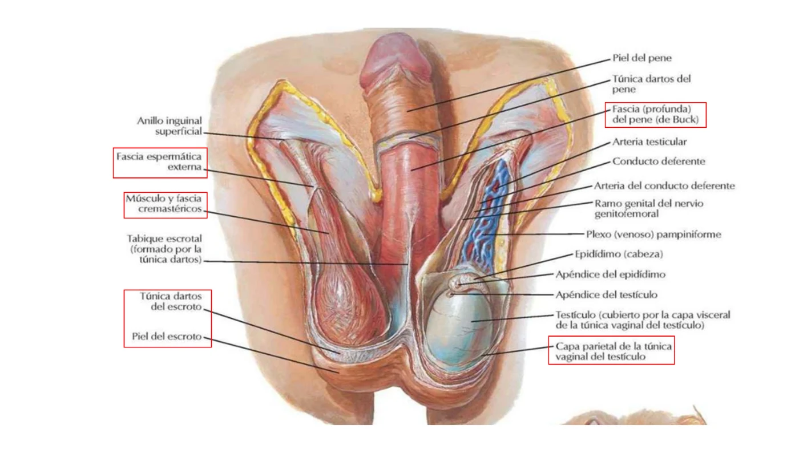
O escroto é o saco que contém os testículos. Cada testículo, epidídimo e a parte inferior do cordão espermático estão contidos em bolsas escrotais individuais. A divisão do escroto é marcada superficialmente pelo rafe escrotal.
As bolsas escrotais são constituídas por vários planos, de fora para dentro:
| Plano | Características |
|---|---|
| 1. Escroto (pele + túnica dartos) | Pele fina, extensível e pigmentada, com pelos e glândulas sebáceas/sudoríparas; a túnica dartos é uma lâmina de músculo liso que forma o septo escrotal (aparelho suspensor do escroto) |
| 2. Fascia espermática externa | Interposta entre o dartos e o cremáster |
| 3. Fascia cremastérica | Formada pelo músculo cremáster (origem no oblíquo interno do abdome); inervado pelo nervo ilioinguinal; sua contração faz ASCENDER o testículo (frio, emoção) |
| 4. Fascia espermática interna | Prolonga a fascia transversalis do abdome; envolve o cordão espermático e a túnica vaginal |
| 5. Túnica vaginal | Serosa, vestígio do conduto peritônio-vaginal; tem camada visceral e parietal, com uma cavidade vaginal entre elas |
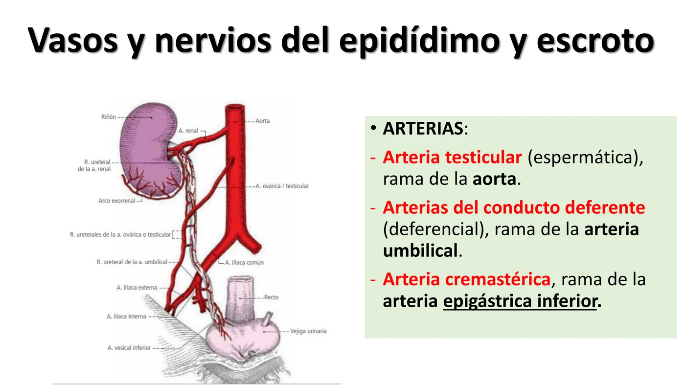
| Artéria | Origem |
|---|---|
| Testicular (espermática) | Ramo da aorta |
| Do conduto deferente (deferencial) | Ramo da artéria umbilical |
| Cremastérica | Ramo da artéria epigástrica inferior |
Veias: só as veias testiculares têm valor funcional — formam o plexo pampiniforme no cordão espermático. Emergem do mediastino do testículo (grupo anterior) e pela cauda do epidídimo (grupo posterior). O grupo anterior termina à direita na veia cava inferior e à esquerda na veia renal; o grupo posterior é drenado pela veia epigástrica inferior.
Nervos: seguem a via das artérias, provenientes dos plexos lombares e aórtico, testicular, hipogástrico inferior e deferencial. Os nervos do escroto (só sensitivos) provêm do nervo pudendo, plexo sacro e plexo femoral.
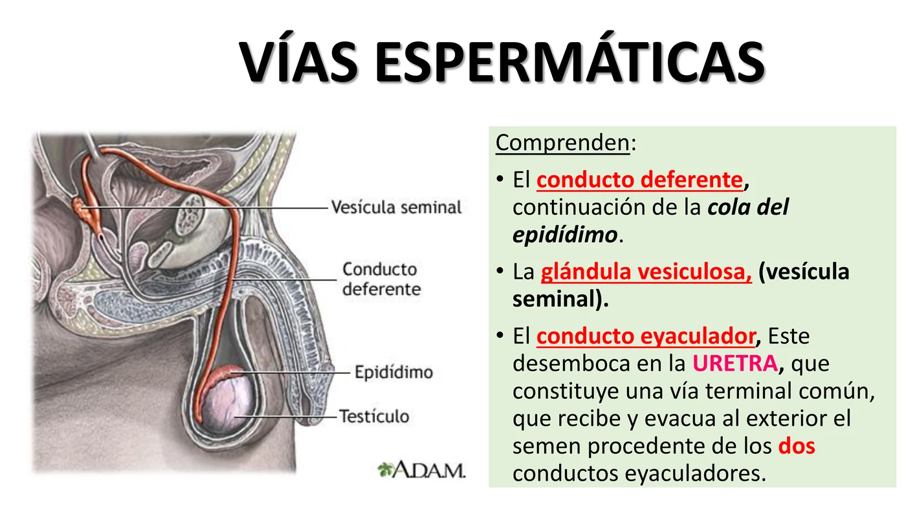
Compreendem: o conduto deferente (continuação da cauda do epidídimo), a glândula vesiculosa (vesícula seminal) e o conduto ejaculador. Este desemboca na uretra, via terminal comum que recebe e evacua ao exterior o sêmen proveniente dos 2 conductos ejaculadores.
Estende-se da cauda do epidídimo até sua união com o conduto excretor da glândula vesiculosa. É um conduto cilíndrico, de consistência firme (resistente à pressão); na sua terminação está dilatado — é a ampola do conduto deferente.
| Porção | Trajeto |
|---|---|
| Escrotal | Unida ao epidídimo |
| Funicular | Passa a fazer parte do cordão espermático |
| Inguinal | Do anel inguinal superficial ao anel inguinal profundo |
| Pélvica | A ampola une-se ao conduto excretor da vesícula seminal, formando o conduto ejaculador, que entra na próstata |
Denomina-se cordão espermático ao conjunto constituído por:
| Conduto deferente |
| Artéria testicular |
| Artéria do conduto deferente |
| Artéria cremastérica |
| Nervo ilioinguinal |
| Ramo genital do nervo genitofemoral |
| Vasos linfáticos |
Todos esses elementos estão envolvidos pela fascia espermática externa, a fascia cremastérica (com o músculo cremáster) e a fascia espermática interna.
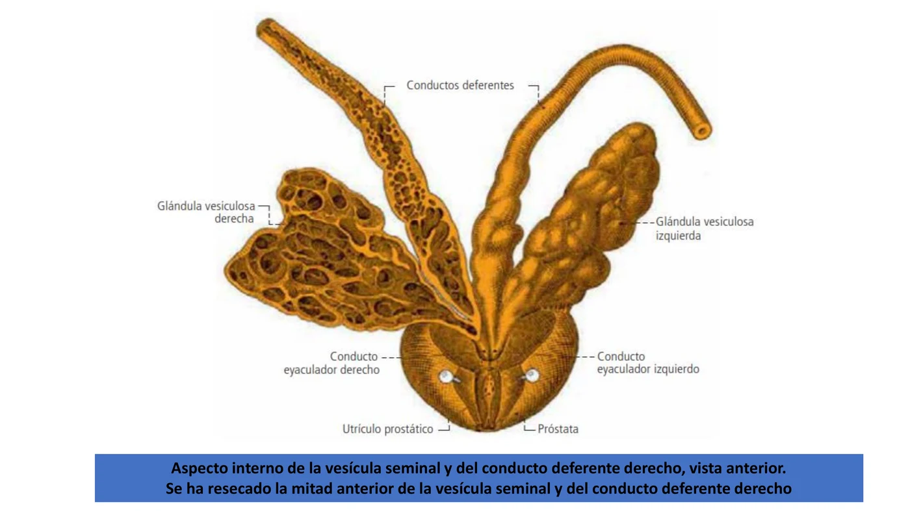
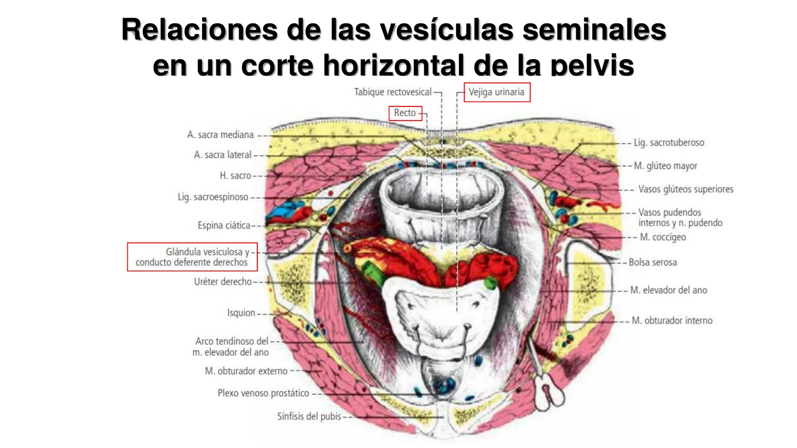
São 2 pequenas glândulas bilaterais, anexas aos conductos deferentes, situadas atrás da vesícula urinária e adiante do reto. Devido à sua função secretória, produzem aproximadamente 70% do líquido seminal — seu nome mais apropriado seria "glândulas seminais". É alongada (cerca de 4 cm), com extremidade superior alargada e extremidade inferior (colo) da qual sai o conduto excretor, que se une ao conduto deferente formando o conduto ejaculador.
Vascularização: artérias provenientes da artéria do conduto deferente (ramo da artéria vesical inferior ou da umbilical). Veias vesiculosas anterior e posterior, drenam na veia ilíaca interna. Inervação: plexo hipogástrico inferior.
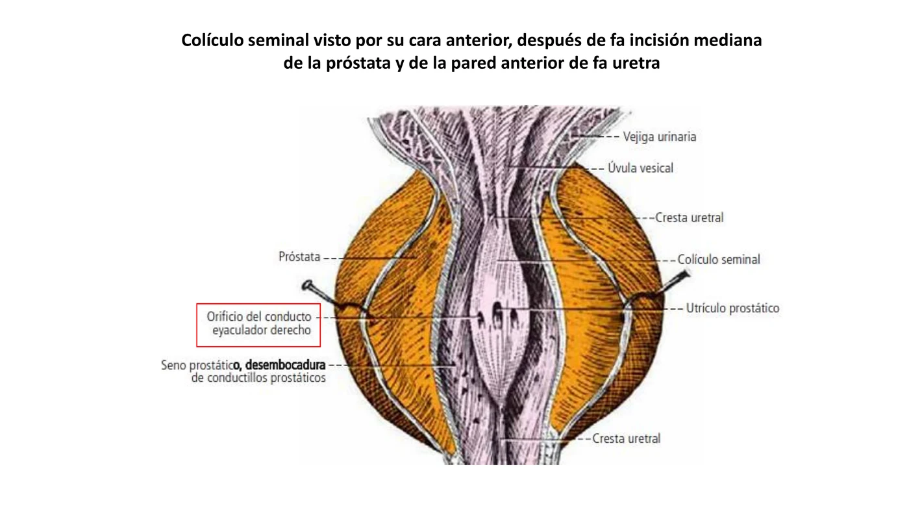
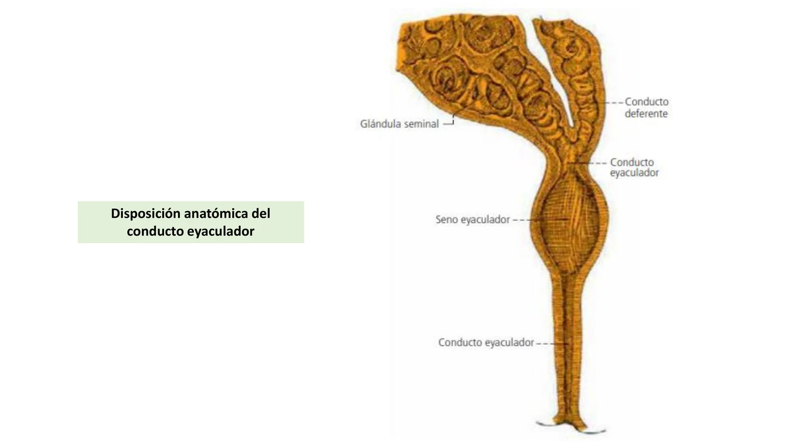
Formados pela união do conduto excretor da vesícula seminal com o conduto deferente. Dirigem-se de forma oblíqua para baixo, adiante e medialmente, no espesor da próstata. Após um trajeto de 15 a 20 mm no adulto, desembocam na parede posterior da uretra prostática através de 2 pequenos orifícios ejaculatórios, no colículo seminal.
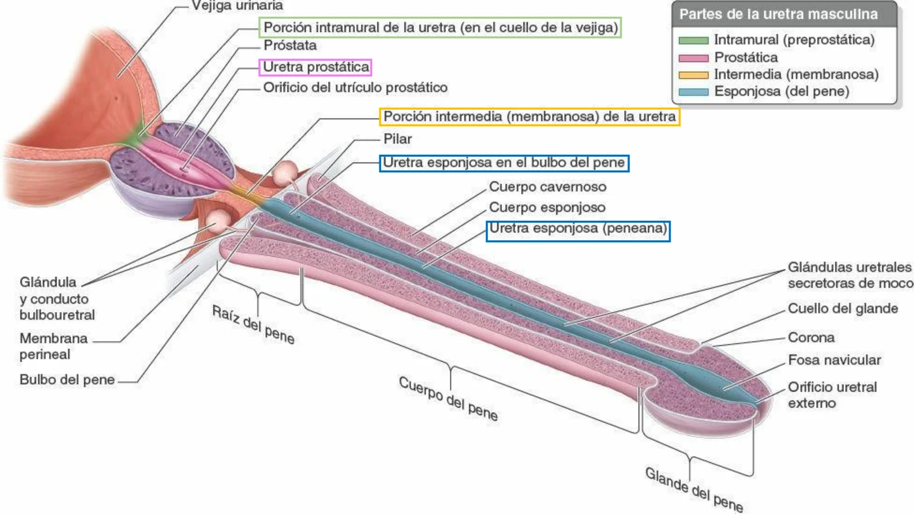
A uretra é o conduto evacuador da bexiga urinária e, no homem, também do produto de secreção das glândulas genitais — é muito diferente no homem e na mulher. A uretra masculina estende-se do colo da bexiga até a extremidade do pênis. É um conduto urogenital excretor da urina e da ejaculação.
| Porção | Comprimento médio |
|---|---|
| Intramural | 1 cm |
| Prostática | 3 cm |
| Membranosa (intermédia) | 1 cm |
| Esponjosa | 12 cm (pode alongar-se na ereção) |
Comprimento total do adulto: 16–17 cm, termo médio.
A uretra prostática recebe ramos das artérias prostáticas; a uretra membranosa, com o esfíncter externo, é irrigada pela artéria uretral e pela artéria do bulbo do pênis, procedentes da pudenda interna; a uretra esponjosa dispõe de numerosas artérias originadas na artéria pudenda interna. As veias mais volumosas, as do corpo esponjoso, vão ao plexo venoso prostático/retropúbico, pela veia dorsal profunda do pênis.
Inervação: a uretra posterior recebe nervos do plexo hipogástrico inferior; a uretra anterior recebe do nervo pudendo, por nervos perineais como o nervo dorsal do pênis.
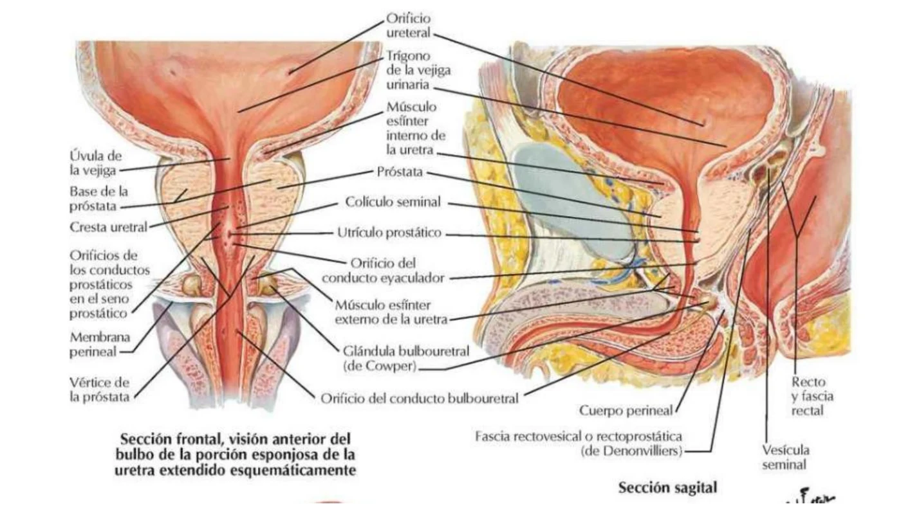
É um órgão desenvolvido ao redor da parte inicial da uretra, situado abaixo da bexiga urinária — envolve a origem da uretra masculina e é atravessado pelos conductos ejaculadores. Tem forma de "castanha". Mede cerca de 3,5 cm na base e aproximadamente 2,5 cm nas dimensões vertical e anteroposterior; peso normal ~18 g.
| Face/estrutura | Descrição |
|---|---|
| Face anterior | Curta, quase vertical |
| Face posterior | Mais longa, triangular |
| 2 faces inferolaterais | Oblíquas para baixo |
| Base | Face superior |
| Vértice | Inferior, por onde emerge a uretra |
A artéria principal é a artéria vesical inferior (genitovesical), ramo da ilíaca interna. Ramos prostáticos adicionais, posterolaterais, provêm da artéria retal média e da pudenda interna.
Inervação: provém do plexo hipogástrico inferior, acompanhando as artérias — são nervos sensitivos e secretores (parassimpáticos).
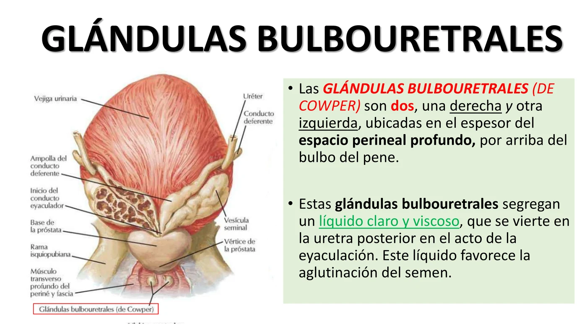
São 2, uma direita e outra esquerda, localizadas no espesso do espaço perineal profundo, acima do bulbo do pênis. Secretam um líquido claro e viscoso, que se verte na uretra posterior no ato da ejaculação — esse líquido favorece a aglutinação do sêmen.
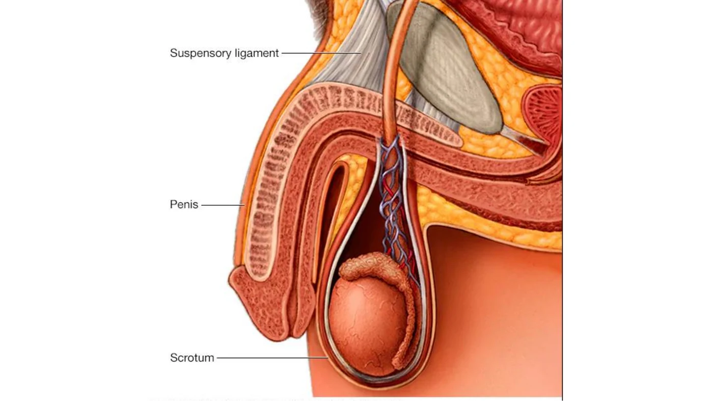
É o órgão copulador, situado abaixo da sínfise pubiana e acima do escroto. O pênis e o escroto formam os órgãos genitais externos masculinos. Possui poder de ereção, graças ao tecido cavernoso erétil. É muito móvel, e sua longitude é de 10 a 12 cm no adulto — em estado de ereção aumenta de volume e comprimento, tornando-se rígido.
| Porção | Descrição |
|---|---|
| 1. Raiz do pênis | Extremidade proximal, fixada ao esqueleto pela inserção dos corpos cavernosos ao púbis, e na linha média pelo ligamento suspensório do pênis |
| 2. Corpo | Cilíndrico, com face superior (dorsal) e face inferior (uretral/escrotal) |
| 3. Extremidade distal | Formada pelo glande, envolto pelos tegumentos que constituem o prepúcio |
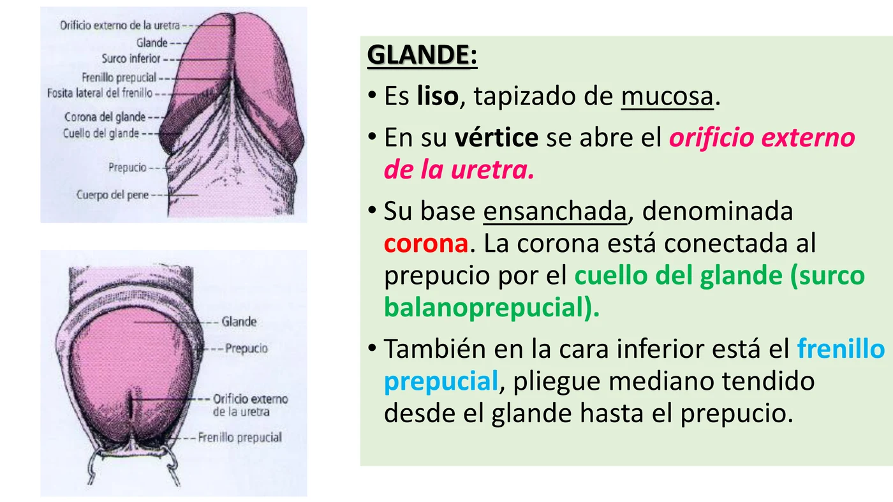
É liso, revestido de mucosa. No seu vértice abre-se o orifício externo da uretra. Sua base alargada denomina-se corona, conectada ao prepúcio pelo colo do glande (sulco balanoprepucial). Na face inferior está o frênulo prepucial, prega mediana estendida do glande até o prepúcio.
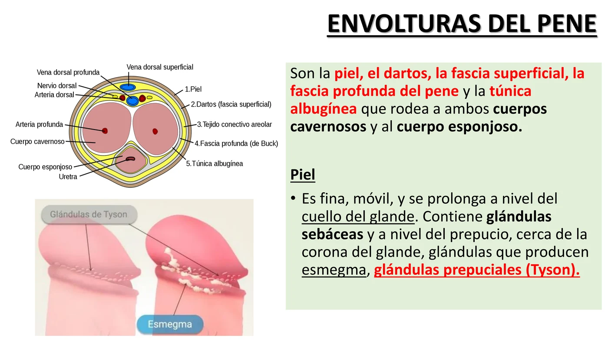
São a pele, o dartos, a fascia superficial, a fascia profunda do pênis e a túnica albugínea que envolve ambos os corpos cavernosos e o corpo esponjoso. A pele é fina, móvel, e se prolonga a nível do colo do glande; contém glândulas sebáceas e, a nível do prepúcio, perto da corona do glande, glândulas que produzem esmegma — as glândulas prepuciais (de Tyson).
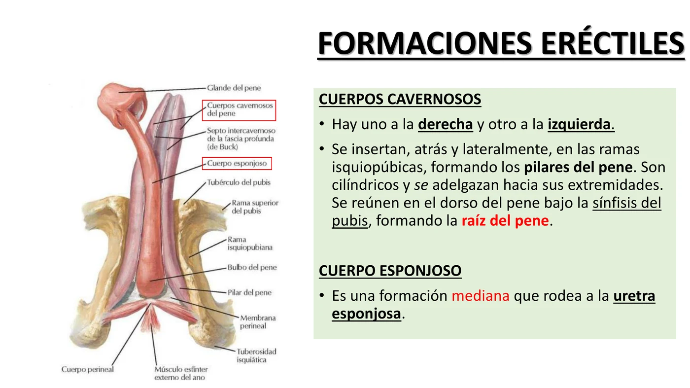
| Estrutura | Descrição |
|---|---|
| Corpos cavernosos | Um à direita e outro à esquerda; inserem-se atrás e lateralmente nos ramos isquiopúbicos, formando os pilares do pênis; são cilíndricos, afinam-se nas extremidades e reúnem-se no dorso do pênis sob a sínfise pubiana, formando a raiz do pênis |
| Corpo esponjoso | Formação mediana que envolve a uretra esponjosa |
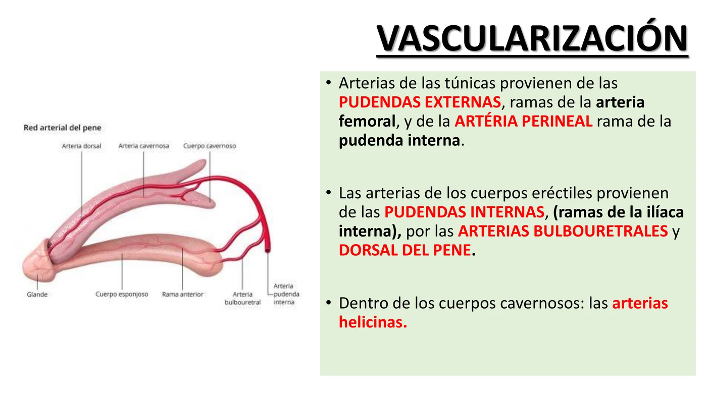
As artérias das túnicas provêm das pudendas externas (ramos da artéria femoral) e da artéria perineal (ramo da pudenda interna). As artérias dos corpos eréteis provêm das pudendas internas (ramos da ilíaca interna), pelas artérias bulbouretrais e dorsal do pênis. Dentro dos corpos cavernosos: as artérias helicinas.
Inervação: a sensibilidade, muito viva no glande, é garantida pelos nervos genitofemoral e ilioinguinal, ramos do plexo lombar. A ereção depende de ramos provenientes do plexo hipogástrico inferior, no qual participam os nervos esplâncnicos pélvicos (nervo erector de Eckardt).
| Tema | Frequência |
|---|---|
| 5 planos do escroto | 🔥🔥🔥🔥🔥 |
| 4 porções da uretra masculina (1-3-1-12 cm) | 🔥🔥🔥🔥🔥 |
| Trajeto do espermatozoide (túbulo → conduto deferente) | 🔥🔥🔥🔥 |
| Composição do cordão espermático | 🔥🔥🔥🔥 |
| Vesículas seminais — função secretora (70%) | 🔥🔥🔥🔥 |
| Formações eréteis do pênis | 🔥🔥🔥 |
| Vascularização testicular/drenagem venosa assimétrica | 🔥🔥🔥 |
O testículo é suspenso pelo cordão espermático e tem certa mobilidade dentro da túnica vaginal — isso predispõe à torção, uma emergência urológica.
O plexo pampiniforme (veias testiculares) drena de forma assimétrica — a veia testicular esquerda desemboca em ângulo reto na veia renal esquerda, dificultando seu esvaziamento.
A próstata envolve a uretra prostática — seu crescimento (comum após os 50 anos) comprime esse segmento da uretra.
| Achado | Mecanismo |
|---|---|
| Jato urinário fraco, hesitação, noctúria | Compressão da uretra prostática pelo crescimento glandular (zona de transição) |
| Retenção urinária aguda | Obstrução completa do fluxo |
A túnica vaginal, vestígio do conduto peritônio-vaginal, normalmente se oblitera deixando apenas uma fina cavidade virtual entre suas camadas visceral e parietal.
O prepúcio normalmente é retrátil, cobrindo o glande; sua retração permite higienização e, em certas condições, pode ficar impossibilitada.
| Condição | Definição |
|---|---|
| Fimose | Impossibilidade de retrair o prepúcio sobre o glande |
| Parafimose | Prepúcio retraído que não retorna à posição normal, constringindo o colo do glande — emergência, pode comprometer a vascularização |
17 imagens — diagramas da cátedra e uma foto real de dissecação, cobrindo testículo, epidídimo, vias espermáticas, próstata, uretra e pênis. Toque em qualquer imagem pra abrir em tamanho grande (🔍 zoom).
23 rodadas de perguntas rápidas sobre testículo, epidídimo, vias espermáticas, próstata, uretra e pênis, 1 por vez, 60 segundos pra você responder mentalmente. A pergunta muda sozinha quando o tempo acaba (ou clica em "Já sei, próxima"). No final, você vê o gabarito completo de tudo.
O sistema guarda, no seu navegador, quais cards você já sabe bem e quais precisam voltar mais cedo — cada vez que você avalia um card, ele recalcula quando ele deve voltar.
18 questões cobrindo testículo, epidídimo, vias espermáticas, próstata, uretra e pênis. Escolhe uma alternativa, depois clica em "Ver comentário completo".